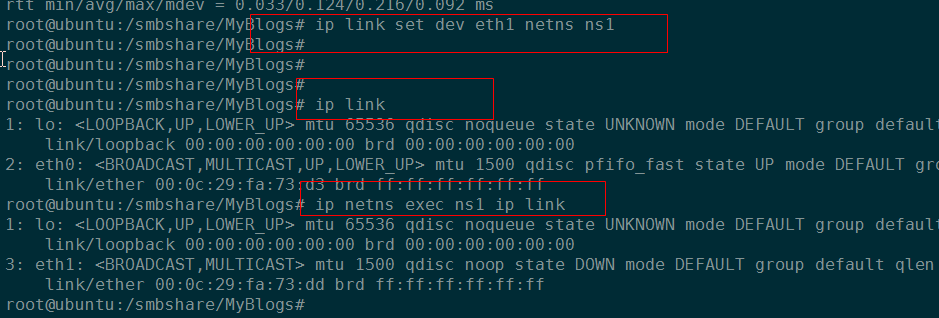

2. neutron虚机网络流分析¶
date: 2017-3-1 15:00
这段时间一直在分析OpenStack虚机数据流，初次接触，感觉非常的复杂。通过一段时间的整理学习，也慢慢有了头绪，现在对相关问题，结合公司实际部署云平台做一下总结！
2.1. 基础概念¶
neutron充分利用了Linux的相关网络技术，让我们先来了解下相关概念。
2.1.1. veth¶
以veth pair形式出现，从一端发送的数据会被另一端接收。
2.1.2. namespace¶
neutron涉及到的主要是网络命名空间，network namespace又如下特点。
具有独立的设备，地址，端口，路由，防火墙规则等；
新建的命名空间默认具有lo设备，并且除了lo设备，任何其他设备(包括物理的和虚拟的)都只能存在一个网络命名空间中；
物理网络设备(真实硬件)只能存在于root网络命名空间(默认网络命名空间)；
经过命令测试，发现这个说法不对。可能由于内核升级，在我的ubuntu-14.04-LTS系统上，物理设备是可能加入到非root命名空间的。
把eth1物理网卡加入ns1命名空间
虚拟设备(如veth)可以被创建且加入到一个网络命名空间；
{kind=link}
可以通过下面的命令，进入到一个网络命名空间shell：
# 进入命名空间ns1, 避免每次输入相关命令前缀ip netns exec <namespace>
ip netns exec ns1 /bin/bash --rcfile <(echo "PS1=\"namespace ns1> \"")
2.2. 问题¶
2.2.1. 虚机到底如何连接到qbr-xxx网桥¶
参考了网络上无数的文章，包括一些大牛写的如 理解neutron， 基本都不约而同的提到: 虚机vm是通过veth pair连接到qbr-xx网桥的。其中vm端接口是tapxxx， 而qbrxxx端接口是vnet0。tapxxx和vnet0是veth pair对！
实际上，我对这种说法持怀疑态度，为此纠结了很久并搜索了大量的资料。首先，假如tapxxx是veth，那么另一端vnet0在哪里，我试了很多命令， 都没有找出这个vnet0设备。如下图所示：qvoxxx和qvbxxx是veth pair，通过ethtool命令也能正常显示对端设备ID， 可是tapxxx不能！

查找vnet0设备，tapxxx另一端
另外，我们可以直接使用ip link命令，显示tapxxxx类型不是veth。

ip link命令显示tap设备类型
其次，在OpenStack Admin Guide文档中，对于tap设备和veth pair设备，也使用的不同颜色的标记。这是不是也印证了，tapxxx并不是所谓的veth设备呢？ 在该图中，tap设备veth pair分别使用了不同的颜色标记。由于这是官网文档，因此基本可以认为，虚机tapxxx接口不是通过所谓的veth pair连接到 qbrxxx的。

GRE模式虚机网络拓扑
2.2.2. 虚机如何和qbrxxx网桥通信¶
通过上面的阐述，tapxxx可不是什么veth。然而新的问题来了，虚机接口tapxxx如何和Linux bridge qbrxxxx通信呢？

查看Linux bridge及其接口
通过brctl show命令，可以看出tapxxx设备是直接连到Linux bridge接口上的(这样更加证明不是通过什么tapxxx/vnet0 veth-pair连接到Linux网桥)。 参考相关资料，可知这是通过程序逻辑实现的。 启动虚机时libvirt使用tapxxx设备创建一个文件描述符fd， 然后Linux bridge给tap设备发送以太网帧时，它也相当于给fd发送了。 然后Qemu模拟器读取fd并把读取内容发送给客户机系统，从而实现虚机(客户机OS)和Linux网桥通信！
2.3. 参考¶
| [1] | 对网络虚拟化有非常精彩的阐述，解决了很多困惑。网址：http://www.innervoice.in/blogs/2013/12/08/tap-interfaces-linux-bridge/ |
| [2] | 介绍了网络命名空间，veth设备等。网址：https://lwn.net/Articles/580893/ |